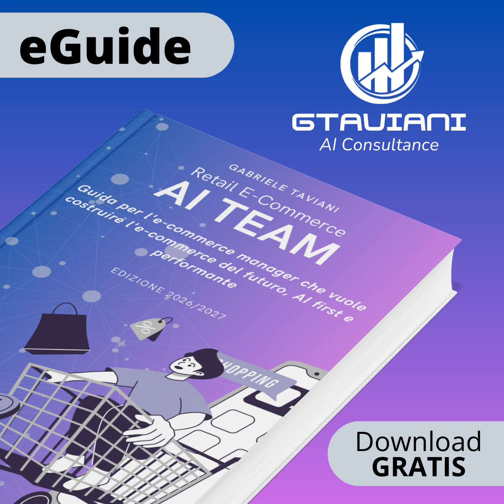

Due giornate in aula a Milano, subito prima del Netcomm Forum. Il primo giorno l'e-commerce marketing si aggiorna in versione AI first; il secondo l'e-commerce manager impara a dirigere AI Agents e AI Team.
Il Netcomm Forum 2027 (21–22 aprile, Allianz MiCo) è dedicato all'Agentic Commerce. Il corso prepara a leggerlo e ad applicarlo: due giorni prima, in aula, con il proprio e-commerce in testa. Ingresso al Forum e meetup serali inclusi nel percorso.
E-Commerce Marketing AI first: il metodo Data Driven aggiornato al 2027.
AI Agents e AI Team: dall'agente singolo al team coordinato.
Al Netcomm Forum, edizione dedicata all'Agentic Commerce.
Percorso continuo su AI Space.
Il metodo Data Driven aggiornato al 2027. BigQuery come CDP collegata a GA4, CRM e Marketing Automation. Dati BigQuery come Knowledge per AI Agents.
Dall'agente singolo all'AI Team di e-commerce marketing, diretto e coordinato dall'e-commerce manager.
Trasversale a entrambe le giornate: cosa cambia con gli agenti — profilazione, Art. 4 e Art. 50 AI Act, cosa sapere e cosa fare.
E-Commerce Marketing Data Driven & AI Agent First, edizione 2027.
Dinamica, con contenuti lezioni, esercitazioni e sessioni dove prendere appunti.
Accesso fino a fine 2027, credito omaggio senza scadenza, account Relevance AI.
Ingresso 21–22 aprile.
Partecipazione VIP con consumazione agli eventi serali organizzati da noi.
Nominativo, valido come evidenza per l'art. 4 dell'AI Act.
Il gruppo di lavoro professionale tra e-commerce manager del retail, su piattaforma e WhatsApp. Accesso senza scadenza, senza quota; selezione stretta — solo e-commerce manager di aziende, nessun fornitore; GTaviani partecipa solo come moderatore.
Il corso è compatibile con il Conto Formazione: GTaviani Consulting fornisce contratto, programma, CV del docente, registri presenze, attestati e fattura pronti per la rendicontazione.
I posti in aula sono limitati e il corso richiede un numero minimo di iscritti per partire: prenotare entro fine 2026 garantisce il posto e l'accesso anticipato al percorso di pre-formazione.
Lasciamo i dettagli organizzativi e la scheda completa via email: compila il form, nessun impegno.
Form di richiesta informazioni in arrivo.
Il form Tally condiviso dalle 3 schede corso non è ancora collegato (ID in attesa).

Retail E-Commerce AI TEAM Guida gratuita per l'e-commerce manager: come costruire l'e-commerce del futuro, AI first e performante. Scarica gratisÈ l'e-commerce in cui agenti AI, non solo persone, compiono azioni per conto del cliente o del merchant: cercano, confrontano, comprano, gestiscono il post-vendita. Il Netcomm Forum 2027 dedica l'intera edizione a questo cambiamento.
Un chatbot risponde a domande. Un AI Agent ha un obiettivo, Condizioni di Soddisfazione da verificare e può agire autonomamente su più step, non solo conversare: è la differenza al centro della seconda giornata del corso.
Una Customer Data Platform unifica i dati cliente da più fonti in un unico profilo. Senza questa base, gli agenti AI non hanno dati coerenti su cui decidere: è il punto di partenza della prima giornata del corso.
Chi usa agenti AI per profilazione o decisioni automatizzate diventa deployer secondo l'AI Act, con obblighi su trasparenza (Art. 50) e formazione del personale (Art. 4). Il corso dedica un modulo specifico a questo.
Solo a e-commerce manager: massimo 10 in aula, per lavorare davvero sugli esercizi con dati di prova e non solo ascoltare una lezione frontale.
L'ingresso al Forum del 21-22 aprile e i meetup serali in città con il gruppo. È distinto dal mini corso sintetico «E-Commerce Marketing AI Team» che Netcomm propone nel proprio calendario, che non fa parte di questo corso.
No: in aula si lavora su una CDP di prova con dati fittizi. Il corso spiega come valutare, impostare o migliorare la propria CDP al ritorno in azienda, non richiede di averne già una.
Il libro stampato, il cruscotto KPI di prova, il workflow one-to-one sulla CDP di prova, l'organigramma del proprio AI Team, il piano dei primi 90 giorni e l'attestato, oltre all'accesso ad AI Space fino a fine 2027.